研究動機
-
軟體定義網路(Software-Defined Networking) 被視為顛覆傳統網路工業的革命性技術。
- 集中式的控制管理，scalibility仍有疑慮
-
雲端運算是近年來資通訊產業最重要的一波革命性的發展，為我國產業發展重點之一。
- 「國產雲端資料中心解決方案」於今年1月啟動。
-
軟體定義雲端資料中心為未來重要產業趨勢
- 專注在資料中心， scalibility相較容易克服。
- 軟體定義網路對雲端資料中心帶來新的產業與技術
計畫目標
- 建構一個以軟體定義網路為基礎的雲端資料中心實驗平台
- 發展以軟體定義網路為基礎的雲端資料中心網路傳輸技術
- 發展以軟體定義網路為基礎的雲端資料中心網路虛擬化(NV)及網路功能虛擬化(NFV)技術
- 發展以軟體定義網路為基礎的雲端服務
SDN架構
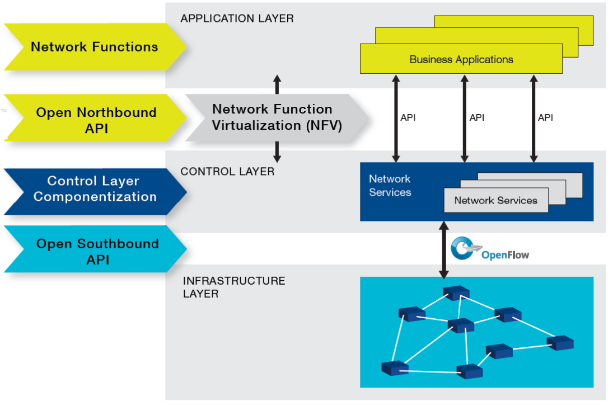
計畫架構與分工
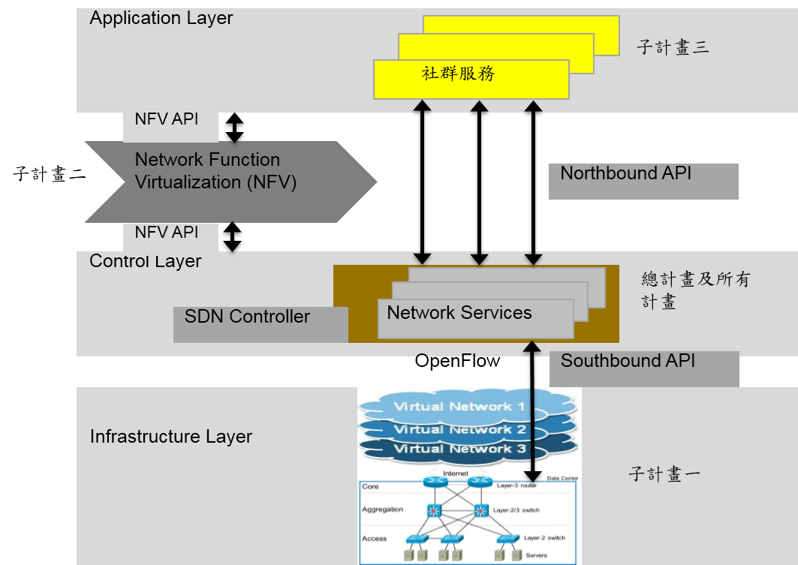
| 研究範疇 | 主要工作內容 | |
|---|---|---|
| 總計畫 | 雲端資料中心實驗平台 | 建置實際測試平台與網頁管理介面、整合各子計畫之研究成果 |
| 子計畫一 | 雲端資料中心網路技術 | 以軟體定義網路為基礎的雲端資料中心網路技術、虛擬網路技術、資源配置與服務品質確保 |
| 子計畫二 | 網路功能虛擬化技術 | 以軟體定義網路為基礎的雲端資料中心的架構下之網路功能虛擬化及服務鏈標準介面的設計、平台實作及虛擬網路技術、資源配置與服務品質確保。 |
| 子計畫三 | 社群服務雲端資料存取技術 | 以軟體定義網路為以軟體定義網路為社群服務大量存取雲端資料存取之解決方案。 |
計畫人力
| 計畫 | 主持人 | 服務機構/系所/職稱 | 共同主持人 | 服務機構/系所/職稱 |
|---|---|---|---|---|
| 總計畫 | 黃仁竑 | 中正大學資工系特聘教授兼工學院院長 | ||
| 子計畫一 | 黃仁竑 | 中正大學資工系特聘教授兼工學院院長 | 李詩偉 | 中正大學通訊系副教授 |
| 楊竹星 | 成功大學電機系教授 | |||
| 陳俊良 | 台灣科技大學電機系特聘教授 | |||
| 子計畫二 | 林柏青 | 中正大學資工系助理教授 | 林盈達 | 交通大學資工系特聘教授 |
| 黃能富 | 清華大學資工系特聘教授 | |||
| 子計畫三 | 陳彥文 | 中央大學通訊系教授 | 江為國 | 中正大學資工系副教授 |
服務導向軟體定義雲端資料中心計畫亮點
- SDN cloud networking technology
- Hybrid SDN-Ethernet Cloud
- Support broadcast free ARP, multi-tenant, VM live migration, fast fail over, load balancing routing, multiple path TCP
- All-SDN cloud
- Support auto addressing, auto routing, fast fail over, load balancing
- File two patents
- Virtual network technology
- Enable network virtualization with QoS control via FlowVisor
- Enable network virtualization with QoS control via virtual tenant network
- Network Function Virtualization (NFV) technology
- Proposed one proposal at ONF Member Workdays (Feb. 2015)
- Proposed an Extended SDN Architecture for NFV
- Implemented an event-based SDN architecture for network security analysis
- Published 2 journal papers, 6 conference papers
- Granted two projects, one from III, one from ITRI
- Participate as a research associate in ONF
計畫績效指標
| 績效指標 | 預期效益 | 目前達成 |
| 論文 | 5 | 8 |
| 研究團隊養成 | 1 | 1 |
| 博碩士培育 | 20 | 39 |
| 研究報告 | 1 | 1 |
| 專利 | 0 | 2* |
| 技術移轉 | 0 | 0 |
| 衍生產學合作計畫件數 | 0 | 2 |
| 國際標準會議參與 | 1 | 1 |
| 促成與學界或產業團體合作研究 | 1 | 1 |
*2件通過工研院資通所專利提案審查，專利申請中。
論文
- Published/accepted
- Chin-Feng Lai, Ren-Hung Hwang, Han-Chieh Chao, Mohammad Mehedi Hassan, "A Buffer-Aware HTTP Live Streaming Approach for SDN-enabled 5G Wireless Networks," IEEE Network, Vol. 29, Issue 1, pp. 49-55, Jan.-Feb. 2015.
- Ying-Dar Lin, Po-Ching Lin, Chih-Hung Yeh, Yao-Chun Wang, Yuan-Cheng Lai, "An Extended SDN Architecture for Network Function Virtualization with a Case Study on Intrusion Prevention," IEEE Network, to appear in May 2015.
- Steven S. W. Lee, Kuang-Yi Li, Kwan-Yee Chan, Yao Chuan Chung, and Guan-Hao Lai, "Design of Bandwidth Guaranteed OpenFlow Virtual Networks Using Robust Optimization," IEEE GLOBECOM 2014, Austin, USA, Dec. 2014.
- Pang-Wei Tsai, Pei-Ming Wu, Chien-Ting Chen, Mon-Yen Luo and Chu-Sing Yang, “On the Implementation of Path Switching over SDN enabled Network: A Prototype,“ IEEE International Conference on Consumer Electronics , Taiwan, 2015. (Accepted)
- Po-Ching Lin, Jyun-Chen Liu, Pin-Ren Chiou, “An event-based SDN architecture for network security analysis,” submitted to IEEE International Carnahan Conference on Security Technology (ICCST), accepted, 2015.
- Jiann-Liang Chen, Yi-Wei Ma, Hung-Yi Kuo and Wen-Chien Hung, “EnterpriseVisor: A Software-Defined Enterprise Network Resource Management Engine,” Proceedings of the IEEE/SICE International Symposium on System Integration, pp.381-384, 2014.
- Yi-Wei Ma, Jiann-Liang Chen, Cheng-Mou Chiang, Yi-Lin Xie and Wen-Chien Hung, “SDN Test Cases Development and Implementation,” Accepted by the IEEE International Conference on Advanced Communication Technology, Korea, July 1-3, 2015.
- Min-Yan Wu and Yen-Wen Chen, “A Heuristic SNS Data Placement Scheme in Cloud Environment,” International Conference on Internet (. ICONI), Dec. 2014.
- Published/Accepted (new)
- Steven S. W. Lee, Kuang-Yi Li, Kwan-Yee Chan, Guan-Hao Lai, and Yao-Chuan Chung, "Software-based Fast Failure Recovery for Resilient OpenFlow Networks," in Proc. IEEE RNDM, Munich, Germany, Oct.2015.
- Steven S. W. Lee, Kuang-Yi Li*§, Kwan Yee Chan*, Jong-Harn YwiChi*, Ting-Wei Lee*, Wei-Kai Liu*, and Yuan-Jia Lin*, “Design of SDN based Large Multi-tenant Data Center Networks,” in Proc IEEE CloudNet 2015, Niagara Falls, Canada, Oct. 2015. (Best Student Paper Award*, Student Travel Grant Award§)
- Ren-Hung Hwang, Huei-Ping Tseng, and Yu-Chi Tang, “Design of SDN-enabled Cloud Data Center,” 5th International Symposium on Cloud and Service Computing (SC2 2015), Chengdu, China, Dec. 19-21, 2015.
- Published/Accepted (new)
- Jiann-Liang Chen, Yi-Wei Ma, Hung-Yi Kuo, Chu-Sing Yang and Wen-Chien Hung, “Software-Defined Network Virtualization Platform for Enterprise Network Resource Management,” Submit to the IEEE Transactions on Emerging Topics in Computing, 2014. (Minor Revision)
- Pang-Wei Tsai, Wai-Hong Fong, Ko-Wei Huang, Mon-Yen Luo and Chu-Sing Yang, "Design and Development of Virtual Nodes in the Network Testbed for Emulation." in 2015 IEEE Pacific Rim Conference on Communications, Computers and Signal Processing.
- Yi-Wei Ma, Jiann-Liang Chen, Kui-He Cheng and Wen-Chien Hung, “Load-Balancing Multiple Controllers Mechanism for Software-Defined Networking” Submit to the Wireless Personal Communications, 2015.
- Po-Ching Lin, Ying-Dar Lin, Cheng-Ying Wu, Yuan-Cheng Lai and Yi-Chih Kao, “Balanced Service Chaining with Traffic Steering in Software Defined Networks with Network Function Virtualization,” Submitted to IEEE Computer.
- 國際標準會議參與(子計畫二)
- 由林柏青教授代表在今年2月11-13日位於Santa Clara, CA的ONF Member Workdays會議進行簡報。
- 由林盈達教授以research associate身份參與今年9月在Santa Clara, CA的ONF Member Workdays會議
- 衍生產學合作案
- 工研院委託研究案: LTE Small Cell SON 功能測試案例開發，2015/5/15~2016/2/15。(子計畫一)
- 資策會委託研究案: SDN 測試案例與工具開發，2015/6開始。(子計畫一)
- 促成與學界或產業團體合作研究
- 申請成為SDN 聯盟為觀察員 (總計畫)
與法人合作狀況
- 與合作法人工作會議
- 2/6 與資策會智慧網通系統研究所進行第一次會議
- 4/17 與資策會智慧網通系統研究所進行第二次會議
- 3/20 與工研院電通所進行第一次會議
- 學生至法人單位實習名單(全職，3博6碩)
- 李光益(博)、江政謀、謝宜麟、陳世曄(博)、張德偉、簡旭彤、周啟松、廖柏穎(博)、楊順程。
總計畫: 服務導向軟體定義雲端資料中心
- 總計畫負責建構服務導向軟體定義雲端平台，以整合各子計畫之成果，並協調各子計畫之合作與資源共享。
- 第一年: 服務導向軟體定義雲端資料中心實驗與測試平台建置
- 中正大學配合款16萬
- 中正大學工學院跨領域特色計畫補助100萬
- 參與教育部「資通訊系統軟體」中心人才培育SDN課程開發
SDN雲端中心實驗網路

完成實驗網路初步建置，實驗網路中包含
- OpenStack Cloud System
- Hybrid Ether-SDN Switched Data Center Network
- VM Live Migration
- Multi-tenanat
- Load Balancing Routing
- Fast Failover
- Broadcast Free ARP
SDN雲端中心實驗網路設備
- SDN switches: 6
- Ethernet switches: 10+
- PC with NetFPGA(10G, 1G): 3
- Servers: 4
- PCs: 20+
子計畫一: 雲端資料中心網路技術
子計畫一以軟體定義網路技術在雲端資料中心的實體網路進行網路控制與管理，研究雲端資料中心中以軟體定義網路為基礎的網路技術，提供實體網路的各種解決方案以及提供高效能之Hybrid SDN 網路介接架構及運作機制，著眼於「Hybrid SDN 虛擬化網路」中有關服務品質(Quality of Service)之研究議題進行探討。網路技術設計目標
大型資料中心網路須滿足下列規格:
- 可支援100,000台主機(PM)， 1,000,000個虛擬主機(VM)。
- 使用者可以規劃自己的私有IP位址,因此不同使用者的VM允許指定重複的IP。
- 高速故障復原能力。
- 具備Plug & Play 功能，網路交換機、PM 等設備可以任意放置與搬動所在地點,系統仍能自動偵測並進行自動設定。
- 交換機與PM可以實際需要進行安裝，不需全部安裝始可使用。
- 支援VM migration。
- 支援Multi-tenant 且各個Tenant 可獨立設定VLAN 。
- 具備動態網路負載平衡路由能力 (dynamic LB routing)。
- 具備自動網路拓樸偵測與PM, VM 位置偵測能力。
- 網路具備Address resolution。
Case 1: Hybrid Switches
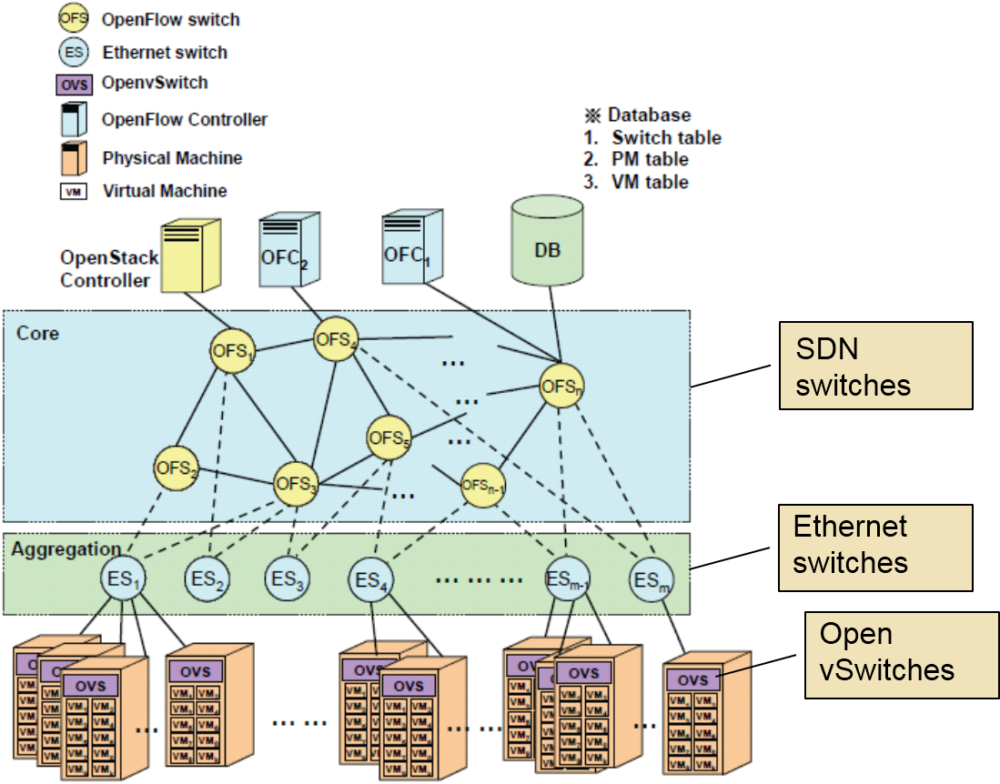
基本構想
- 以SDN 交換機及SDN controller使網路具備中央控管特性，並解決傳統交換機FIB限制與tenant ID不足的問題。
- 網路中大部分設備仍使用乙太網路交換機，以節省網路的建置成本。
- 利用資料中心為一受控系統特性，重新安排MAC攜帶各類訊息，並利用SDN交換機具修改IP與MAC能力，充分利用各IP與MAC位址欄位攜帶路由資訊並避免FIB不足。
- 利用實體server中的軟體交換機(OVS)協助動態路由，並且達到tenant isolation之目的。
系統架構
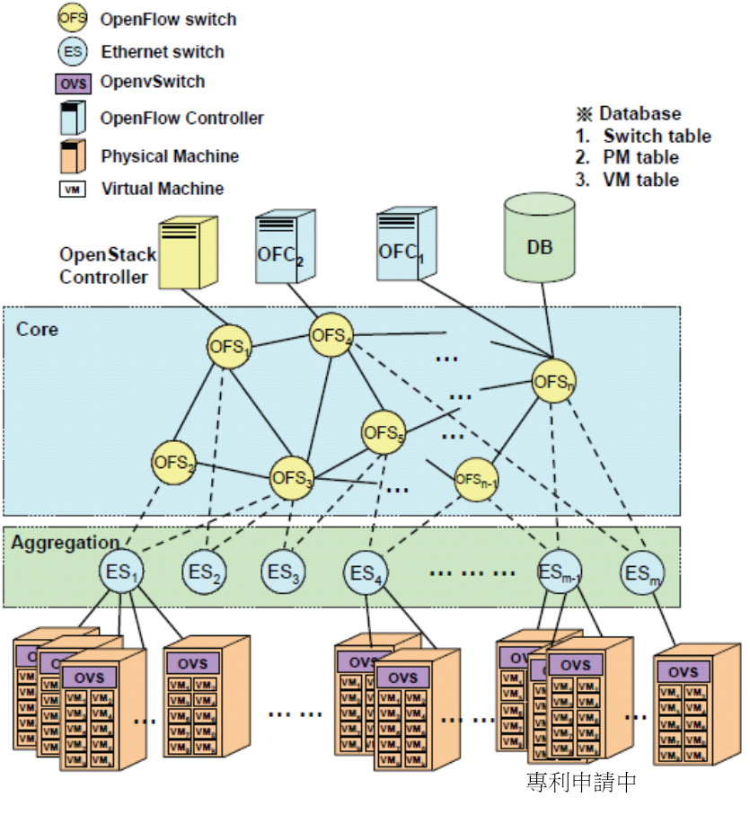Architecture
- Core: physical OpenFlow switch
- Aggregation: Ethernet switch
- Access: OpenVSwitch (software)
- SDN Controller(s)
- OpenStack controller (OSC)
- Centralized Control
- MAC assignment
- IP assignment
- Tenant ID assignment
- Packet forwarding
Address Resolution
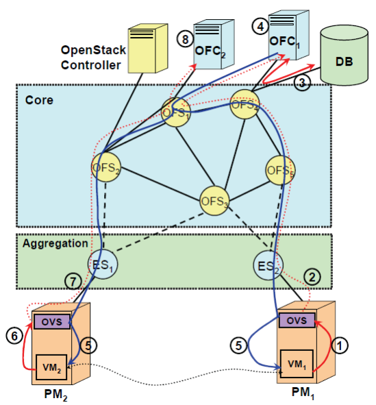
※Controller實現ARP proxy避免broadcast storm
※fully-controlled 善用有限的ES FIB
Step1：VM1發出ARP request請求VM2的MAC address
Step2：OVS1擷取ARP並傳送至Controller
Step3：Controller將VM2 IP送至DB查詢
Step4：
- (1)Controller計算VM1↔VM2的最佳路由路徑之後設定OVS1和OVS2的flow entry。
- (2)Controller產生ARP reply給VM1
- (3)Controller產生ARP request給VM2。
Step6：VM2送ARP reply給Controller
Step7：OVS2擷取ARP reply並傳送至Controller
Step8：Controller收到ARP reply來確認VM2位置
Dynamic Routing
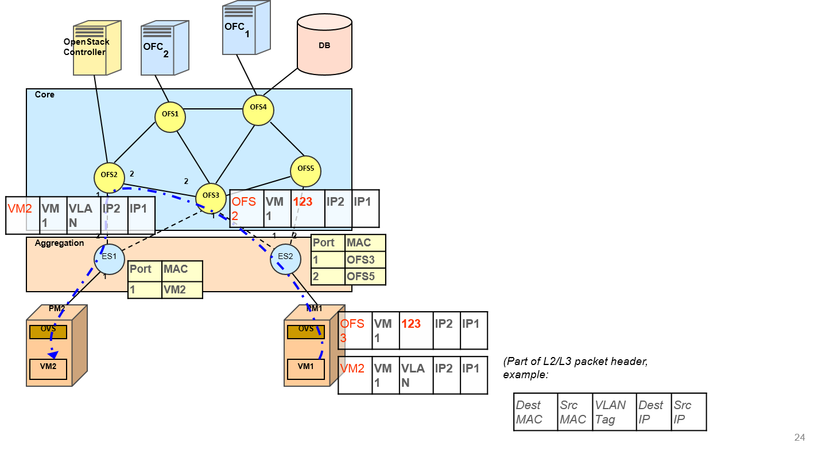※動態配置傳輸路由
1. OFC1 dynamically determines the bi-direction route between VM1 and VM2.
2. Using MPTCP to enhance throughput
Live Migration Disruption Time
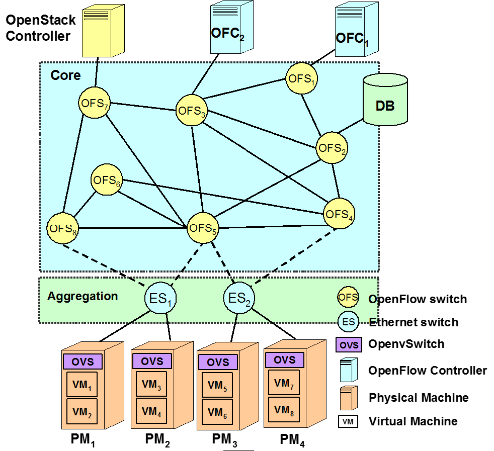VM1 that originally resided in PM1 before it was moved to PM4
VM1 and VM3 that keeps VM3 sending probing packets to VM1 every 1 msec
1. Update the database
2. Setup new path
Case 2: All-SDN-Switch DC
All-SDN-switch data center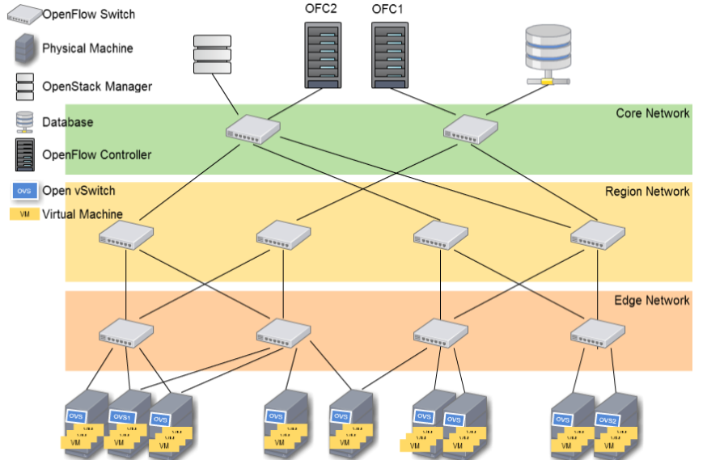
Objectives
Traffic Engineering- Auto topology discovery
- Auto switch/OVS/host(NIC) addressing
- Auto routing
- Fast failure detection and recovery
- Load balancing routing
- MPTCP
Auto Routing
- Consider VM1 send ARP to VM2
-
After that, routing is based on the flow entry set at each switch (will be described later).

- Edge switch
-
Destination is under the same edge switch (downward) (16*48=768 flow entries)
Destination Ouptport [Core SW ID][Region SW ID][Edge SW ID][Edge Port ID] (dl_dst=dst_addr/32) [Edge Port ID] -
Needs to send to regional or core switch (flow entries = no. of cores)
Destination Ouptport [Core SW ID](dl_dst=dst_addr/8) Port to the core
Fault Detection
Periodic polling based on multi-rooted tree topology (one poll for each subtree)
子計畫一:網路虛擬化研究
兩種網路虛擬化技術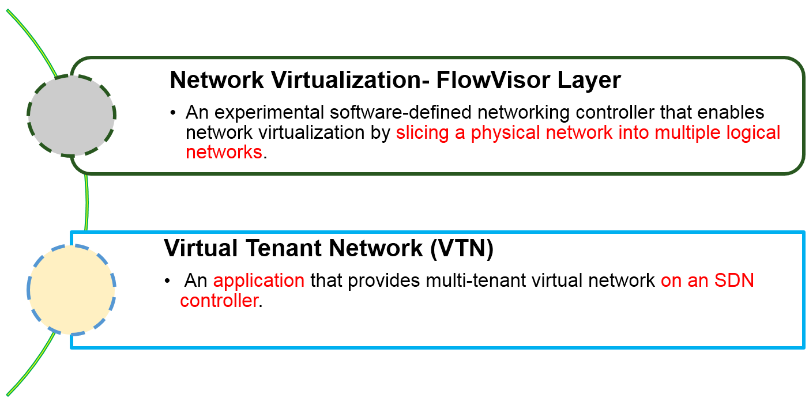
子計畫二: 網路功能虛擬技術
子計畫二之研究目標在於實現網路功能虛擬化技術所需的介面、 平台實作及虛擬網路技術、資源配置與服務品質確保，以提供其他子計畫應用的架構。
網路功能虛擬化及服務鏈標準介面設計與效能測試平台
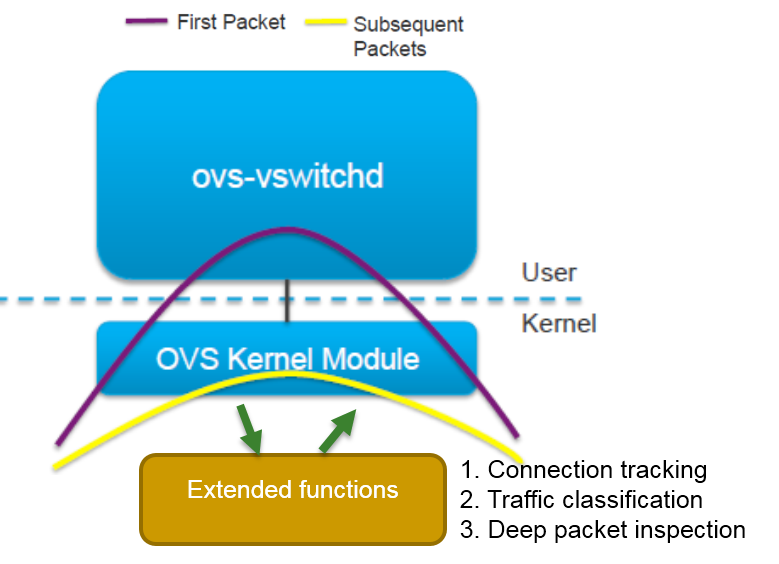Year 1 issues
- Extension of vSwitch to support
(1) DPI
(2) traffic classification
(3) stateful connection tracking within the kernel - Extension of northbound/southboundAPIs to support the high-level extension on vSwitch
- Implementation based on open source packages
- Evaluation of overheads reductionand performance enhancement with the extension
雲端資料中心流量控制與預測
- 目標:探討如何在雲端資料中心中與NFV相關API結合，對流量的行為進行預測與分析，以達到流量辨識與網路入侵偵測之目的。
- 第一年:雲端資料庫流量數據擷取架構設計
- 開發一套基於SDN controller與NFV的流量特徵擷取引擎
- 探討5G網路與SDN軟體定義網路控制進行API結合的機制
- 開發非DPI的流量分類系統，利用分析流量行為模式，再以機器學習演算法建立分類模型。
- 行為模式分析資料為69個Attributes集合，例如每條Flow的封包大小、封包數量、傳輸時間等。
- 由於行為模式的資訊相當輕量，所以可傳送雲端平台以虛擬機器進行統計建模。
子計畫三: 以社群服務為基礎之雲端資料存取技術研究與設計
子計畫五之主要研究目標在探討社群網路服務 之資料，在雲端系統上之有效配置及存取相關技術。
網路功能虛擬化及服務鏈標準介面設計與效能測試平台
- 第一年：
- 導入Facebook 之Social Graph 建立SNS 參考範例
- 完成網路社群服務資料儲存主機佈署及資料快取演算法設計(social data placement & caching)
Caching Scheme
Caching System Architecture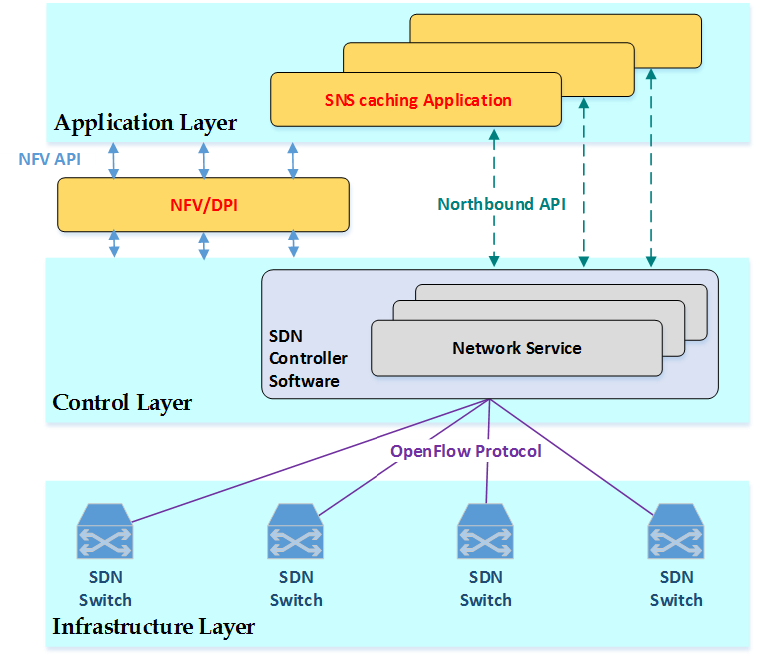
Proposed Interval Caching with Extra blocks (ICE)
- 以interval caching為基礎，決定objects受歡迎程度。
- 用Extra Blocks增加受歡迎objects 在cache中blocks的連續性，增加block在cache中的連續性。(降低cache中blocks替換的頻率)
- 以virtual interval預測下一個request 的出現時機，進行prefix caching，縮短受歡迎object之startup delay
- 提高hit ratio
- 降低cache過程中提取寫入cache的blocks數量。
第二年度計畫規劃
目標
- 延續本年度計畫
- 加強與下一代行動通訊網路的關聯性
- 依與法人合作的會議結論修正工作項目
第二年度計畫方向
| 計畫 | 下一年度工作項目規劃 |
| 總計畫 |
1.整合OpenStack與OpenFlow Controller的管理及其網頁管理介面 2.建置實驗環境，整合各子計畫成果於此實驗平台上。 |
| 子計畫一 |
1.具支援IEEE 1588 精準同步時脈之NetFPGA based OpenFlow 交換機研發 2.SDN技術在small cell上之應用 3.Hybrid OpenFlow-Ethernet 網路設計 4.異質OpenFlow Switch間的虛擬網路控制技術 5.All-SDN Cloud Data Center網路設計 6.跨域軟體定義交換技術(封包交換規則、flow 路徑選擇或合併等) 7.依據目前網路活動情形，動態的引導網路流量，以達效能最佳化。 |
| 子計畫二 |
1.NFV上service function的資源配置演算法與最佳化 2.NFV架構(含服務鏈)中各component的溝通介面延伸設計 3.雲端資料中心流量辨識與預測 |
| 子計畫三 |
1.導入SDN之虛擬化EPC 2.Cloud In-cast 防制演算法設計 3.SNS 分散式快取資料演算法設計 |
計畫重點研究項目
具備 IEEE 1588 (PTP) 精準同步對時之OpenFlow 交換機設計
- 提供無線網路 (如small cell base station) 精準對時時鐘
- 一般無線網路時脈精準要求為1-3 μsec
- 使用NetFPGA 設計並實現具備 IEEE 1588 (PTP) 精準同步對時之OpenFlow 交換機
- 設計規格: 兩終端時脈誤差小於1μsec
- Boundary Clock 設計與實作
- Transparent Clock 設計與實作
- OpenFlow Controller 可規劃同步時脈分佈網路與路由
4G+ 網路接取與應用測試環境—異質網路測試場域: LTE Small Cell SON開發
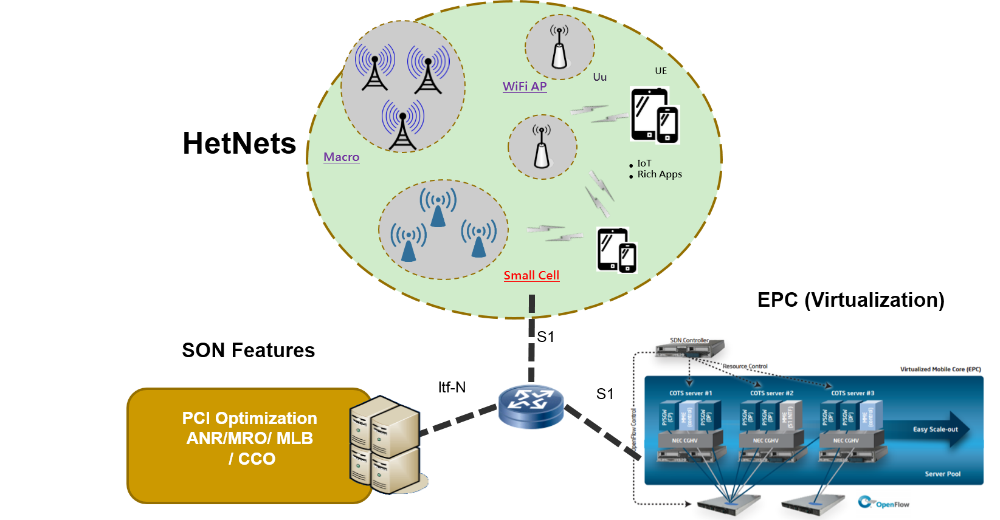
子計畫:導入SDN/NFV之行動核心網路 (SDN/NFV-enabled EPC)
- 目標
- 利用SDN概念分割EPC核心網路之Control與Data Planes，提升核心網路佈署彈性。
- 運用SDN可程式化的特性，取代核心網路內昂貴的專用硬體設備與使用效率並降低成本。
- 結合OpenStack虛擬化技術將實體網路可依照實際應用需求來動態切割成為多個虛擬化的網路，提高網路資源使用彈性及降低硬體建置成本
- 工作項目一: 導入SDN之行動核心網路
- 考慮將EPC中S-GW和P-GW合併，縮減為S/P-GW，使網路封包傳送經過tunneling的次數降低，
- 規劃將S/P-GW data plane硬體更換為OpenFlow switch(稱為S/P-GW-D) ，
- 將結合S-GW和P-GW的control plane功能，設計S/P-GW control application (稱為S/P-GW-C) ，
- 並將S/P-GW-C虛擬化，交由SDN-based EPC controller做集中式管理。
- 將設計EPC controller平台，使EPC control plane (MME, S/P-GW-C, PCRF)資訊共享。
- 工作項目二:導入NFV之行動核心網路
- 將以OpenStack作為虛擬化EPC control plane的基礎，把SDN-enabled EPC的MME、S/P-GW-C、PCRF網路元件，佈署在OpenStack的協調平台上，
- 設計資源調度(orchestration)演算法，EPC controller可依據網路的負載量動態的配置所需資源，以滿足網路傳輸品質的需求。
- 當超過一定的負載量時，OpenStack可以增加S/P-GW-C虛擬機VM數量來處理control signal，並通知EPC controller配置較多的OpenFlow switch作為S/P-GW-D來處理user traffic；而當負載量回復正常時，再透過EPC controller將網路資源配置回復為初始的狀態。
展示項目
- 雲端資料中心網路技術
- Hybrid SDN網路
- 網路技術(路由、VM live migration等)
- 多控制器備援機制
- All-SDN 網路
- 網路技術(拓樸發掘、定址、路由、錯誤偵測等)
- 具支援IEEE 1588 精準同步時脈之NetFPGA based OpenFlow 交換機研發
- 網路功能虛擬技術
- 基於Open vSwitch的DPI網路功能實作
- 基於SDN controller與NFV的流量特徵擷取引擎
- 網路虛擬化
展示環境
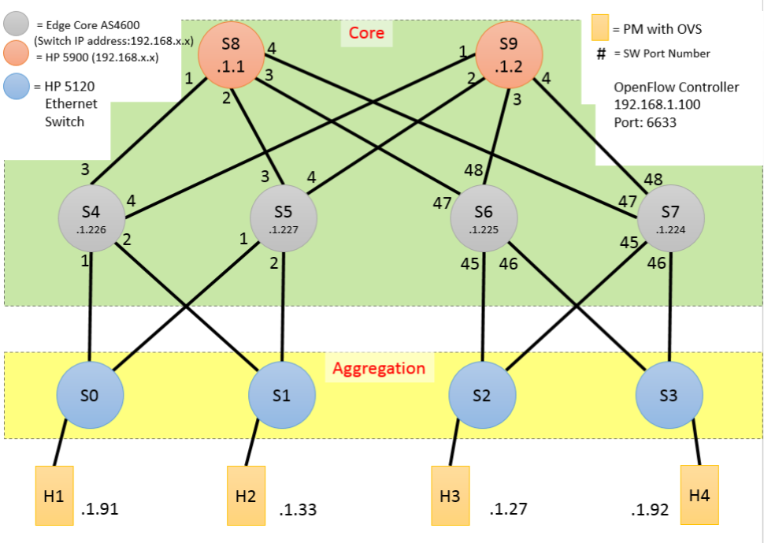